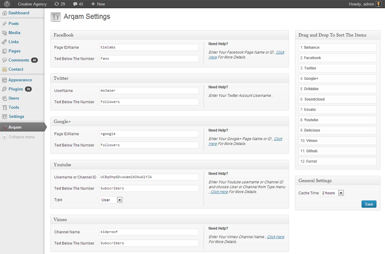
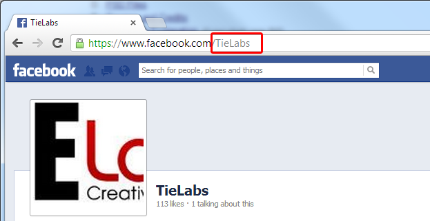
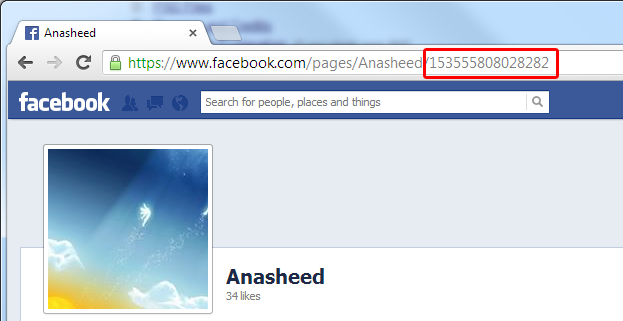
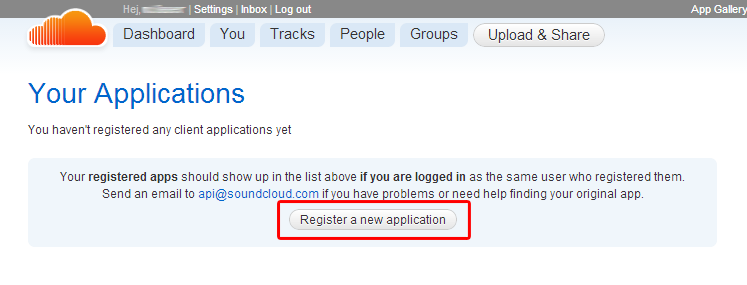
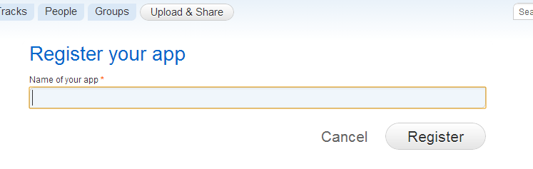
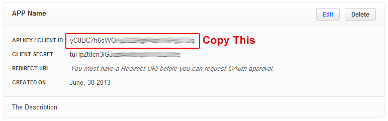
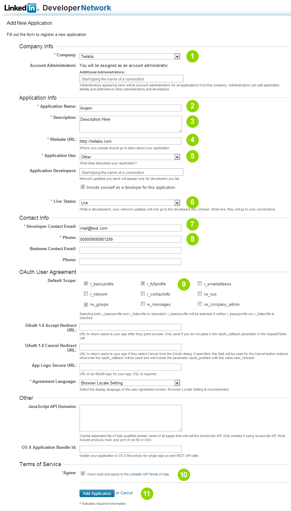
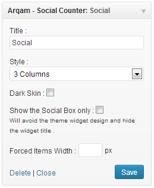

“Arqam Plugin” Documentation by “Mo3aser”
“Arqam Plugin”
By: Fouad Badawy ( aka Mo3aser )
Portfolio: Check My Items
Thank you for purchasing my plugin. If you have any questions that are beyond the scope of this help file, please feel free to email via my user page contact form here. Thanks so much!
Table of Contents
- Installing Arqam Plugin
- Arqam Settings Page
- How can I get my Facebook page Name/ID ?
- How can I get my Google+ page Name/ID ?
- Setting Up Twitter Info
- Setting Up SoundCloud Info
- Setting Up Behance Info
- Setting Up Instagram Info
- Setting Up Foursquare Info
- Setting Up MailChimp Info
- Setting Up LinkedIn Info
- Social Counter Widget
A) Installing Arqam Plugin - top
Check These Links For How to Install Arqam Plugin .
- Installing Plugins
- Step by Step Guide to Install a WordPress Plugin for Beginners
- How to install a WordPress plugin
B) Arqam Settings Page - top
From Arqam settings page you can set the social accounts info , Cache time and change the order of Social icons .
C) How can I get my Facebook page Name/ID ? - top
If Your page Link is somthing like http://www.facebook.com/tielabs the page name will be tielabs

If Your page Link is somthing like http://www.facebook.com/pages/Anasheed/153555808028282 the page ID will be 153555808028282

D) How can I get my Google+ page Name/ID ? - top
If Your page Link is somthing like http://plus.google.com/+psdtuts/ the page name will be +psdtuts
If Your page Link is somthing like http://plus.google.com/106192958286631454676 the page ID will be 106192958286631454676
E) Setting Up Twitter Info - top
- Login to Twitter, and go to: https://dev.twitter.com/apps
- Create new application
- Fill in the form fields and create your app
- After you're done, you'll need to put the Consumer key and the Consumer secret to Arqam at WP Admin > Arqam > Twitter box
F) Setting Up SoundCloud Info - top
To Setup SoundCloud you need to get an API Key
- Go To Your Applications page .
- Click On "Register a new application" Button .
 - Enter Your App Name and click on "Register".
 - Check "Yes, I have read and accepted the Developer Policies" and Click on "Save App" Button
- Copy the "Client ID" and Go To "Arqam Settings page" and paste it in "API Key" input field in the SoundCloud Box.

G) Setting Up Behance Info - top
To Setup SoundCloud you need to get an API Key
- Go To Manage Your ApplicationsRegister a New App page .
- Click On "Register a new App" Button .

- Enter Your App Name, Your Blog URL and Description . Then click on "Register Your App".

- Copy the "API KEY / CLIENT ID" and Go To "Arqam Settings page" and paste it in "API Key" input field in the Behance Box.

H) Setting Up Instagram Info - top
To Setup Instagram you need to get an Access Token Key .. use this tool to get it .
I) Setting Up Foursquare Info - top
To Setup Foursquare you need to get an Access Token Key .. use this tool to get it .
J) Setting Up MailChimp Info - top
To Setup MailChimp you need to get your List ID , List URL and API Key .
J) Setting Up LinkedIn Info - top
Getting Your Company ID :
- Use the Company ID lookup form to get your Company ID .. copy the Id and paste it in the "LinkedIn" box > "Company ID" input field in the Arqam Settings page.
- Click "Save" Button .
Getting Your Group Slug :
- If your group URL is http://www.linkedin.com/groups/Group-Name-887609 .. your group slug will be Group-Name-887609 copy the slug and paste it in the "LinkedIn" box > "Group Slug" input field in the Arqam Settings page.
- Click "Save" Button .
Register a new App :
- Go To API Keys page .
- Click on + Add New Application link .
- Fill out the form :

- Company: Choose your company or add add a new company .
- Application Name: enter any name for the Application .
- Description: enter a description for the Application .
- Website URL: enter your site URL .
- Application Use: Select "Other" .
- Live Status: Select "Live" .
- Developer Contact Email: Enter Your Email.
- Phone: Enter Your Phone Number.
- Default Scope: Choose "r_fullprofile" and "rw_groups".
- Terms of Service: Check the "Agree" checkbox .
- Click on Add Application Button .
- Copy the API Key and Secret Key
- Back to the "Arqam Settings" page and Click on Get Access Token link in the end of the Linkedin Box.
- Enter the API Key and Secret Key in the LinkedIn App info box and click Submit .
- It will redirect you to Linkedin Allow Access page .. enter your Email and password and click on Allow Access button .
- It will redirect you back to the Arqam Settings page .. now the Access Token Key containing a code .
L) Social Counter Widget - top
To Display "Arqam - Social Counter" in your sidebar
- Go to Appearance > Widgets.
- Choose "Arqam - Social Counter" and drag it to the sidebar where you wish it to appear.
- Change the widget's options as you wish .

Once again, thank you so much for purchasing this plugin. As I said at the beginning, I'd be glad to help you if you have any questions relating to this plugin. No guarantees, but I'll do my best to assist.
Mo3aser